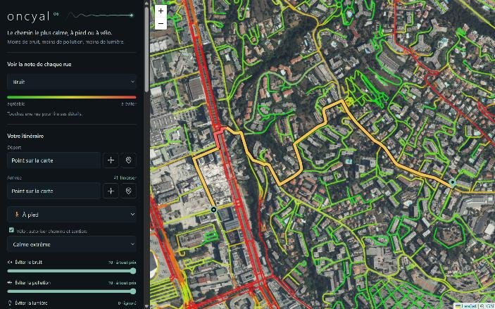
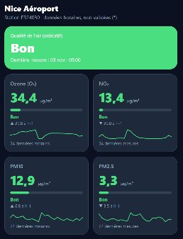
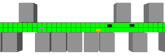
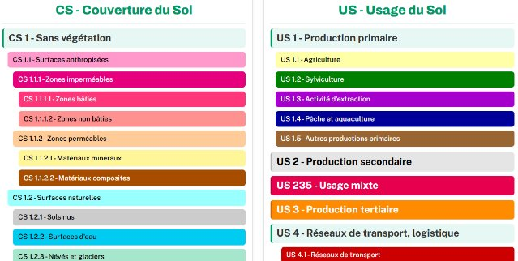

Oncyal 06
Application de navigation à pied et à vélo qui propose des itinéraires évitant la pollution atmosphérique, lumineuse et sonore dans les Alpes-Maritimes.
Ouvrir l'application →Étudiant en Master Ville et Environnement Urbains à l'Université Côte d'Azur (parcours pollution atmosphérique, changement climatique, impacts sanitaires et énergies renouvelables). Je construis des outils cartographiques et des modèles pour rendre la qualité de l'air et du cadre de vie plus lisibles.
Applications, modèles et études de terrain.

Application de navigation à pied et à vélo qui propose des itinéraires évitant la pollution atmosphérique, lumineuse et sonore dans les Alpes-Maritimes.
Ouvrir l'application →
Site affichant en direct les données de pollution atmosphérique (O₃, NO₂, PM10, PM2,5) d'une station de mesure Atmosud.
Voir le site →
Modèle GAMA (automate cellulaire et système multi-agents) simulant la dispersion des particules fines dans un canyon de rue, en intégrant trafic, chauffage, météorologie et morphologie bâtie.
Lire le rapport (PDF) →Cartographie par télédétection à partir d'images satellite Landsat.
De la montagne à l'orage : simulations de phénomènes météorologiques.
Mesures de PM2,5 et PM10 couplées à une enquête sur les biais de perception des usagers.
Cartographie collaborative des lichens, bioindicateurs de la pollution atmosphérique (Bois de Vincennes).
Comprendre comment éviter la propagation d'espèces invasives (parcelle du Dahomey, Paris).
Élaboration d'un protocole d'étude (Île-de-France).
Suivi d'une jardinière sur deux ans, avec iNaturalist et PictureThis.
Stages et travaux de terrain.
Institut national de l'information géographique et forestière (IGN), Saint-Mandé
Analyse de la participation des acteurs publics au dispositif participatif du référentiel d'OCcupation du Sol à Grande Échelle. Élaboration d'un plan d'action pour dynamiser l'engagement des utilisateurs et rendre le processus plus accessible.
Documents du stage →
Chambre d'Agriculture de l'Aisne, Laon
Automatisation du calcul des volumes d'eau mobilisables par bassin versant du département.
Documents du stage →Grandes cultures en Picardie, arboriculture dans la Drôme
Parcours universitaire.
Université Côte d'Azur, Nice
Parcours pollution atmosphérique, changement climatique, impacts sanitaires, énergies renouvelables.
Université Paris 1 Panthéon-Sorbonne
Option environnement.
Lycée Saint-Michel, Saint-Mandé
Spécialités physique-chimie et HGGSP, options mathématiques complémentaires et théâtre.
Outils et méthodes.
Anglais (B2), allemand (A2).
Aide aux personnes âgées, ramassage de déchets, réparation de vélos, vlogs de randonnée. Théâtre, football, randonnée, ornithologie, cyclisme, botanique.